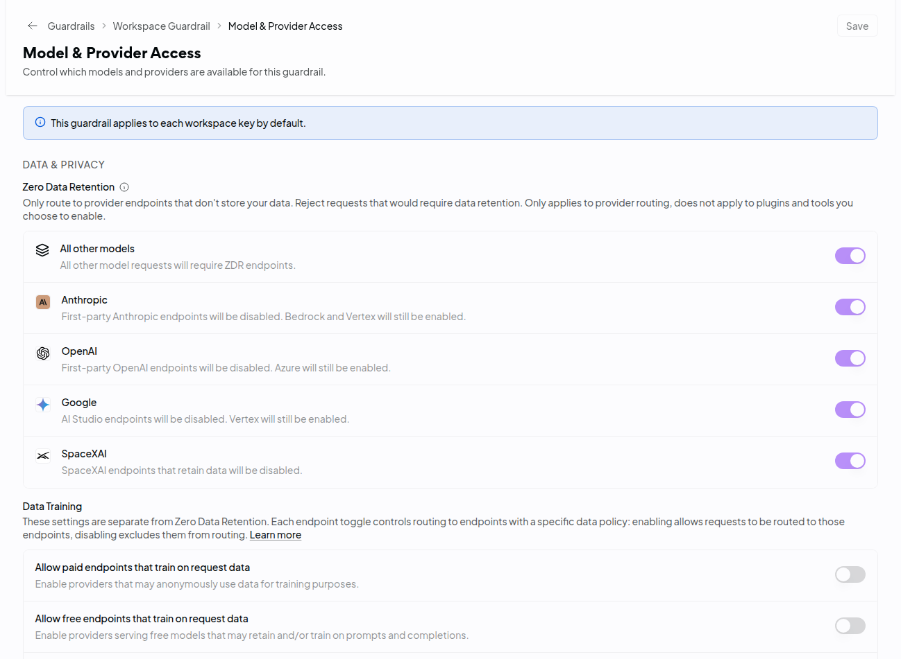
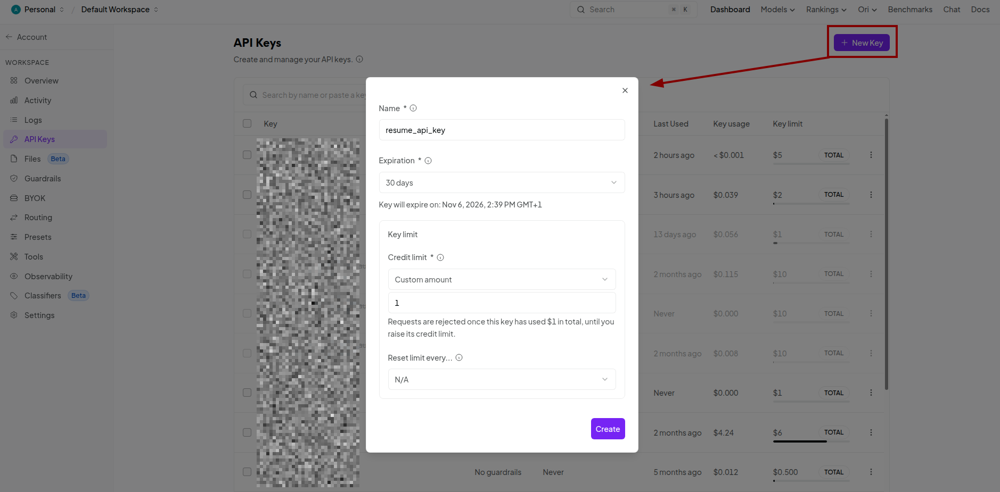
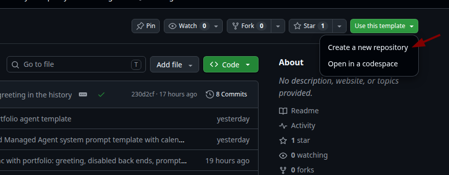
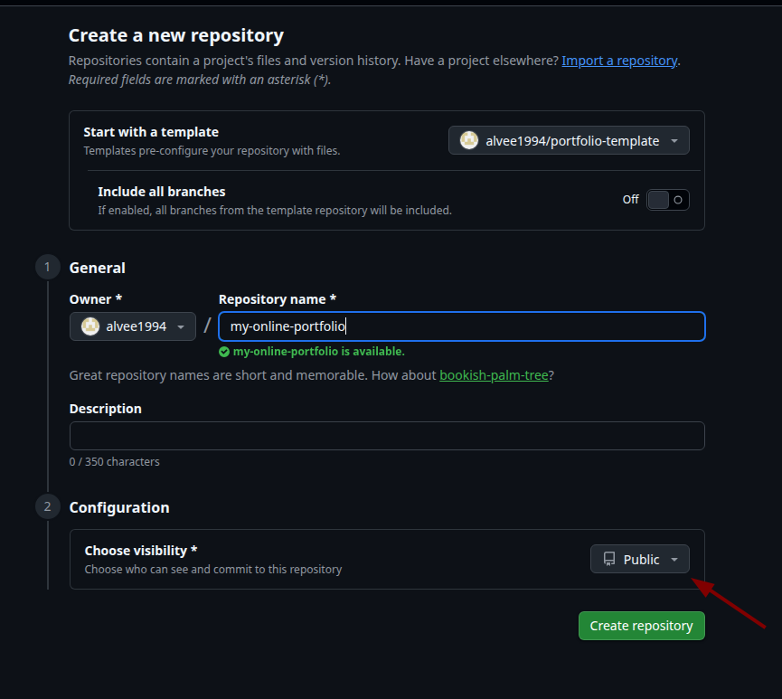

3CloudflareA small program, the Worker. Holds your key. The page never sees it.
4OpenRouterOne account and one key for hundreds of models.
5AI modelAnswers from what you wrote. Keeps nothing.
You do
Create three free accounts
Install one AI assistant
Write about yourself
Add $5 to OpenRouter and make one key
Paste the key into one file, click Allow, approve
Your assistant does
Sets up Git, Node.js and GitHub on your laptop
Copies the template and writes your page
Turns your notes into the agent's knowledge
Sets up Cloudflare, the bot check and the secrets
Publishes your page
Words you will see
Repo
A project folder on GitHub. Yours is called portfolio and is public.
Worker
The small program on Cloudflare that talks to OpenRouter for your page.
API key
A password that lets the Worker use your OpenRouter credit. Keep it secret.
Model / provider
The model writes the answers, for example GPT-6 Luna. The provider is the company that runs it on its servers.
ZDR
Zero data retention. The provider keeps nothing from the conversation.
Turnstile
Cloudflare's bot check. Stops bots from using up your credit.
Portfolio agent | Setup guide2
Portfolio agentPart 1 · Prepare
The plan
Eight steps
Do them in order. Steps 1 to 6 prepare. Step 7 is where your assistant builds everything.
Step
Time
You are done when
01
Create accounts
15 min
You can log in to GitHub, Cloudflare and OpenRouter
02
Pick your AI assistant
10 min
It starts on your laptop
03
Let it set up the laptop
15 min
Git, Node.js and GitHub are ready
04
Connect it to Cloudflare
10 min
It names your account, and wrangler whoami works
05
Write about yourself
45 min
prompt.txt is saved
06
Set up OpenRouter
15 min
$5 credit, ZDR on, key with a $5 limit
07
Copy the template, then build
20 min
Your page is live
08
Try it and share it
5 min
The agent answers about you
01
Step 1 · 15 min
Create accounts
Done whenYou can log in to GitHub, Cloudflare and OpenRouter.
GitHub. Sign up at github.com/signup, Free plan. Your username becomes your web address (<username>.github.io), so pick a professional one. Watch the video
Cloudflare. Go to dash.cloudflare.com/sign-up and click Sign up with GitHub. No new password needed. Skip any domain or plan offer.
OpenRouter. Go to openrouter.ai and click Sign up. Signing in with Google or GitHub is fine. You set it up in step 6.
Portfolio agent | Setup guide3
Portfolio agentPart 1 · Prepare
02
Step 2 · 10 min
Pick your AI assistant
Done whenYour assistant starts and you are logged in.
You need only one. Pick the one you already pay for or use. If you have none, Antigravity is free. Skip the install if yours is already on your laptop. The next steps have a line for each. Follow only the lines for yours.
No terminal
Claude desktop app, Code tab
This is Claude Code inside the Claude app. Needs a Claude Pro or Max subscription.
Mac: press Cmd + Space, type Terminal, press Enter. Paste with Cmd + V.
Windows: press the Windows key, type PowerShell, press Enter. Not "Run as administrator". Paste with Ctrl + V.
Not recognized?Close the terminal and open a new one. New programs only show up in a new window. Still not recognized? Restart the laptop.
Windows and CodexIf you see running scripts is disabled, run Set-ExecutionPolicy -Scope CurrentUser RemoteSigned and type Y.
Portfolio agent | Setup guide4
Portfolio agentPart 1 · Prepare
03
Step 3 · 15 min
Let your assistant set up the laptop
Done whenIt shows you git --version, node --version and gh auth status working.
Start your assistant. In the Claude desktop app: Code tab, + New session, set Environment to Local, pick any folder, for example Documents. Then paste:
Help me set up this laptop. I am not technical, so go one step at a time and tell me exactly what to click or type. Check what is already installed first. I need: Git, Node.js (LTS version) and the GitHub CLI. Set my Git name and email so I can save changes. Then log me in to GitHub with gh auth login using the web browser, and let it handle Git logins too. At the end, run git --version, node --version and gh auth status to show me it all works.
Approve each step it asks about. If it gets stuck, paste the error back and ask it to fix it.
04
Step 4 · 10 min
Connect your assistant to Cloudflare
Done whenYou ask "List my Cloudflare account name." and it names your account.
This lets your assistant set up Cloudflare for you, including the bot check. Without it, you would click through the Cloudflare dashboard yourself.
Claude desktop app
Click + next to the prompt box, Connectors, Manage connectors. Find Cloudflare, click Connect. Not listed? Add custom connector, name Cloudflare, URL:
All: a browser opens. Sign in to Cloudflare and approve.
Portfolio agent | Setup guide5
Portfolio agentPart 1 · Prepare
Step 4, part 2Log in to Cloudflare for publishing
Done whennpx wrangler whoami shows your email and account.
You do this one yourself
Publishing your Worker uses a second Cloudflare login, through a tool called Wrangler. It waits for you to click a button in your browser, so your assistant cannot do it for you. Do it once now.
1. Open a terminal
Mac
Press Cmd + Space, type Terminal, press Enter.
Windows
Press the Windows key, type PowerShell, press Enter.
Claude desktop app
Click Terminal at the top of your session, or press Ctrl + `.
Antigravity IDE
Menu Terminal > New Terminal.
2. Run the login
npx wrangler login
If it asks Ok to proceed? (y), type y and press Enter.
Your browser opens a Cloudflare page. Log in if asked, then click Allow.
The terminal says you are logged in. You can close it.
3. Check it
npx wrangler whoami
It shows your email and your Cloudflare account. If your assistant later says Wrangler is not logged in, do these three steps again and tell it "done".
Portfolio agent | Setup guide6
Portfolio agentPart 1 · Prepare
05
Step 5 · 45 min · The most important step
Write about yourself
Done whenprompt.txt is saved in your Documents folder with your name, CV and detailed document.
Your agent is only as good as what you give it. A CV is a short list. Your agent needs the story behind every line.
A. Get interviewed by an AI
Use any AI chat: ChatGPT, Claude, Gemini, or your assistant. Give it your CV and paste:
Here is my CV. Interview me one question at a time to build a detailed markdown document about my career, far more detailed than my CV. For every role and project, ask about the problem, what I did, the tools, the result with numbers, and what I learned. Then 3 to 5 short stories (context, challenge, choice, result), my strengths, and what I want next. Use plain language. Stop when you have covered every experience, then give me the full document.
Take your time with the answers. Real details and numbers make the difference.
B. Put it together in prompt.txt
Copy the template into a plain text file: Notepad on Windows, TextEdit on Mac (choose Format > Make Plain Text first). Fill in your name, paste your CV and the document, and save it as prompt.txt in your Documents folder.
You represent [your name] professionally on their portfolio website, using their resume and additional details as your source of truth. Answer visitors' questions about their background, skills and experience like a sharp, laconic salesperson: confident, concise, no fluff, always putting them in the best honest light.
<resume>
[paste your CV text here]
</resume>
<additional details>
[paste your detailed document here]
</additional details>
Leave out anything private
Strangers will read what your agent says, and this text goes to an AI provider with every question. No phone number, home address, salary, health details or other people's names.
Portfolio agent | Setup guide7
Portfolio agentPart 1 · Prepare
06
Step 6 · 15 min
Set up OpenRouter
Done whenYou have $5 credit, ZDR is on, and you have copied a key with a $5 limit.
Four parts, in order. Privacy comes before the key.
Zero Data Retention: turn on all five switches. All other models, Anthropic, OpenAI, Google, SpaceXAI. OpenRouter then only uses providers that store nothing.
Data Training: leave both switches off (paid and free endpoints that train on request data).
Click Save at the top right. Nothing changes until you do.

Prompt logging is off by default. Leave it off, even for the 1% discount. OpenRouter then keeps only time, model and token counts, not the text.
Copy the key now. It starts with sk-or-. Keep the tab open until step 7.

Always set the $5 limit
It is the one thing that protects you from a big bill if someone abuses your agent or the key leaks. Never paste the key into the chat, an email or a message. If it leaks, delete it on the API Keys page and make a new one.
Before step 7, check
Your balance shows $5 on the Credits page
All five Zero Data Retention switches are on, and you clicked Save
Both Data Training switches are off
Your key shows a $5 limit on the API Keys page
You have the key copied, starting with sk-or-
You know your model id, or you keep the default openai/gpt-6-luna
Portfolio agent | Setup guide9
Portfolio agentPart 1 · Prepare
6.4Choose a model
Not sure? Keep the default: openai/gpt-6-luna. OpenAI's fast, low-cost model for chat. It has a ZDR provider and costs about $0.10 per million input tokens. Your assistant sets it up for you.
Zero data retention: tick Supported. Only models on this list work with your agent.
Prompt pricing: drag the slider down to about $0.50.
Top right, switch from List to Table to compare side by side. Skip models marked (batch) or (free).
Click a model name. Its page shows the id under the title, for example openai/gpt-6-luna. Copy it.
Column
What it tells you
Look for
Weekly Tokens
How much people use it
High usage usually means reliable
Input
Price per million tokens you send
Below $0.50
Output
Price per million tokens it writes
Below $2
Context
How much text it reads at once
32,000 or more
Latency
Time until the answer starts
Under 3 seconds
Good options
Cheapest ZDR provider, price per million tokens, checked October 2026. Prices change: the Models page has today's numbers.
Model id
Input
Output
Notes
openai/gpt-6-luna
$0.10
$0.50
The default. Made for fast, cheap chat
deepseek/deepseek-v3.2
from $0.26
from $0.38
Good all-rounder, several ZDR providers
deepseek/deepseek-v4-flash
from $0.09
from $0.18
Newer and cheaper. Test it first
mistralai/mistral-small-2603
from $0.15
from $0.60
From Mistral, a European company
google/gemini-3.5-flash-lite
from $0.15
from $1.25
Fast
What a question costsEach question sends your whole prompt.txt and the chat so far, about 6,000 tokens, and gets about 200 back. With GPT-6 Luna that is under a tenth of a cent. $5 covers roughly 5,000 questions.
Test before you pickOpen openrouter.ai/chat, add one or two models, paste your prompt.txt as the system prompt. Ask what a recruiter would ask, and "What is their phone number?" (it should refuse).
Portfolio agent | Setup guide10
Portfolio agentPart 2 · Build
07
Step 7 · 20 min
Build it
Done whenYour assistant says the page is published.
7.1Make your own copy on GitHub
Your page needs its own repo on your GitHub account. You copy it from the template in two clicks.
Click the green Use this template button, then Create a new repository.

Repository name:portfolio. This becomes your address, <username>.github.io/portfolio.
Include all branches: leave it Off.
Choose visibility: Public. Your page must be public, or nobody on the internet can open it and chat with your agent. Your CV and key never go into the repo.
Click Create repository.

The screenshot shows another name. Use portfolio, or any name you like: the address then ends in that name.
Portfolio agent | Setup guide11
Portfolio agentPart 2 · Build
7.2Let your assistant build it
Start your assistant in your Documents folder:
Claude desktop app: Code tab, + New session, Environment: Local, project folder Documents.
Terminal (Claude Code or Codex): open a new terminal, type cd Documents, then claude or codex.
Antigravity: File > Open Folder > Documents.
Then paste this. Change the repo name or model id if yours differ:
Clone my GitHub repository called portfolio into this folder. Then read AGENTS.md in it and follow it to build my portfolio. My prompt.txt is in my Documents folder. Use the OpenRouter model openai/gpt-6-luna.
You do three things when it asks
1
Paste your keyIt opens a file called .dev.vars. Paste your key right after OPENROUTER_API_KEY=, no spaces. Save, close.
2
Wrangler, if askedOnly if you skipped step 4, part 2 or it expired. Do the login there, then tell it "done".
3
ApproveRead what it proposes before it acts. Say no if something looks wrong.
The assistant checks the key line is filled in without reading your key. The key never goes into the chat or to GitHub.
08
Step 8 · 5 min
Try it and share it
Open https://<username>.github.io/portfolio/ and click Ask my agent. The first time can take a few minutes to go live. Before you share the link, check:
It answers correctly about two or three things in your CV
It refuses a question it should not answer, for example "What is your salary?"
The page has no typos and your contact details are right
Then put the link on your LinkedIn, CV and email signature.
Portfolio agent | Setup guide12
Portfolio agentPart 3 · Keep it running
Part 3
Keep it running
Change things
Tell your assistant in plain words. The page and the agent's knowledge are separate. When you update your CV, ask for both.
You want to
Say
Takes
Change the page
"Add my new job to the page"
1 to 2 min
Change what the agent knows
"Add this project to my agent's knowledge and deploy the Worker"
1 min
Change the model
"Change my agent's model to <model id> and deploy the Worker"
1 min
Watch the cost
openrouter.ai/activity shows every request: when, which model, tokens, cost. Not the text.
When the key's $5 limit or your balance runs out, the agent replies error: Agent unavailable. Add credit and raise the key's limit. Nothing needs redeploying.
Privacy: where the text goes
Who
What they get
What they keep
GitHub
Your page. It is public
Your page
Cloudflare
The visitor's question, passing through your Worker
The Worker logs no message text and no IP address
OpenRouter
The question, the chat so far, your agent's knowledge
Time, model, token counts. Not the text, as long as prompt logging stays off
Model provider
The same as OpenRouter
Nothing. The Worker only allows ZDR providers
ZDR is enforced twice: in your OpenRouter guardrail (6.2) and by the Worker on every request. A model with no ZDR provider makes the agent stop, rather than fall back to one that keeps data.
Portfolio agent | Setup guide13
Portfolio agentPart 3 · Keep it running
If something breaks
Paste the full error to your assistant and ask "what went wrong and how do I fix it?".
You see
What to do
Agent unavailable
Check balance, key limit and expiry on OpenRouter. Then ask the assistant to check the key and the model
Bot check failed
Ask it to check the Turnstile widget hostname and both keys
Not allowed
Ask it to check ALLOWED_ORIGIN and deploy the Worker again
Too many requests
Wait a minute. It is a limit per visitor
Failed to fetch
Wait a few minutes after the first deploy, then ask it to check config.js
Old page after a change
Wait 2 minutes, refresh with Cmd + Shift + R (Mac) or Ctrl + F5 (Windows)
What keeps you safe
Your OpenRouter key lives only on Cloudflare and in .dev.vars on your laptop. That file never goes to GitHub.
The bot check and a limit per visitor stop people from running up your bill.
The $5 credit limit on your key is the hard stop. Never remove it.
The agent only talks about your portfolio. It refuses other topics and ignores visitors who try to change its rules.
Your repo is public, but your story is not in it. See the next page.
Portfolio agent | Setup guide14
Portfolio agentPart 3 · Keep it running
Where your prompt.txt lives
Your repo on GitHub is public. Your prompt.txt is not in it, and never will be.
1Your laptopprompt.txt stays in Documents. The assistant reads it there and never copies it into the repo.
2profile.txtThe assistant puts the text in workers/profile.txt. Git ignores it, so it never goes to GitHub.
3Your WorkerOn deploy, profile.txt is packed inside your Worker on Cloudflare. That is how your agent knows you.
Anyone can see your page and its code, but not your notes. The only way for a visitor to learn more about you is to ask your agent. It can quote anything you wrote, so private details still stay out. Keep prompt.txt safe: it is your own copy.
Pause or clean up
Most of the time you do not need to delete anything. Find your situation:
Situation
What to do
You want to change the page, knowledge or model
Ask your assistant. Do not delete anything
You worry about cost
Nothing to do. The $5 key limit stops all spending. The Worker, GitHub Pages and the bot check are free
Your credit ran out
The chat shows an error, nothing else breaks. Add credit when you want it back
Agent off for a while, page stays
Delete the key on the OpenRouter API Keys page. Keep the Worker. Later, make a new key and ask your assistant to put it in
Done with the portfolio for good
Clean up everything, in the order below
Clean up everything, only when you are done for good
OpenRouter key: API Keys page, ⋮ on your portfolio key > Delete. Nothing can spend your credit after this.
Cloudflare Worker: dash.cloudflare.com > Workers & Pages > worker-openrouter > Settings > at the bottom, Delete. The chat stops working.
Bot check (optional):Turnstile in the Cloudflare menu > your portfolio widget > Delete.
GitHub repo: your repo > Settings > General > at the bottom, Delete this repository. The page goes offline. This cannot be undone.
Your laptop: delete the portfolio folder in Documents. It holds .dev.vars with your key and profile.txt.
Full guideEvery step, with more detail: GUIDE.md in the template repo.